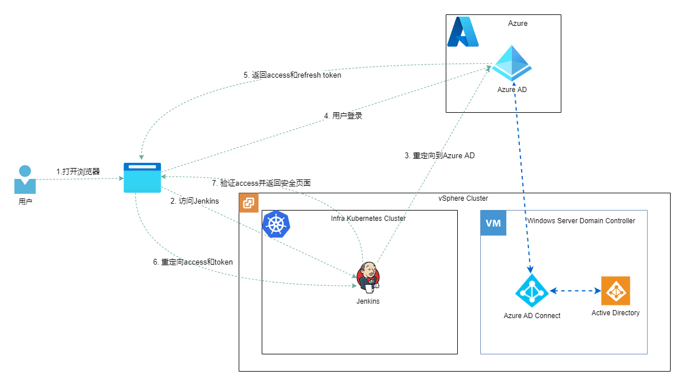

Unified Authentication and Authorization for Homelab Applications Using Azure AD
My Homelab runs many services — NAS, Jenkins, Gitlab, SonarQube, Grafana, and more. Managing authentication and authorization independently for each application creates several problems:
- Multiple passwords to maintain.
- If a periodic password rotation policy is enforced, that means rotating passwords across multiple applications on a regular basis.
- Adding a new user to the Homelab environment requires creating accounts in each application separately, which is tedious.
- When a user’s role changes, the change must be applied across every application.
My solution is: Azure AD + Windows Server AD.
Azure Active Directory
Azure Active Directory, abbreviated as Azure AD or AAD, is a cloud-based identity and access management service. It helps employees access external resources such as Microsoft 365, the Azure portal, and thousands of other SaaS applications.
Features
- Azure Active Directory Free. Provides user and group management, on-premises directory synchronization, basic reporting, self-service password change for cloud users, and single sign-on across Azure, Microsoft 365, and many popular SaaS apps.
- Azure Active Directory Premium P1. In addition to the Free tier features, P1 allows hybrid users to access both on-premises and cloud resources. It also supports advanced administration such as dynamic groups, self-service group management, Microsoft Identity Manager, and cloud write-back to enable self-service password reset for on-premises users.
- Azure Active Directory Premium P2. In addition to the Free and P1 features, P2 provides Azure Active Directory Identity Protection for risk-based conditional access to apps and critical company data, as well as Privileged Identity Management to discover, restrict, and monitor administrators and their access to resources, with just-in-time access when needed.
The above content is sourced from the official documentation. For more details, visit What is Azure Active Directory?
How to Obtain
There are two ways to obtain Azure Active Directory:
Option 1: Register an Azure account to use Azure Active Directory Free. This is the simplest approach and remains available indefinitely, though some features are unavailable — for example, self-service password reset/change/unlock with on-premises write-back.
Option 2: Obtain Azure AD Premium P2 through the Microsoft 365 Developer Program. This unlocks all Azure AD features, but the Microsoft 365 E5 subscription obtained this way is only valid for 120 days. After that, Microsoft decides whether to auto-renew based on its own criteria. Solutions for automatic renewal can be found online.
Active Directory Domain Services
Active Directory stores information about objects on the network and makes it easy for administrators and users to find and use that information. Active Directory uses a structured data store as the foundation for a logical, hierarchical organization of directory information.
How to Obtain AD
There are two ways to obtain AD:
Option 1: Use Azure Active Directory Domain Services. For individual users, the cost is relatively high — in East Asia, for example, it costs at least $109 per month. The advantage is equally obvious: reliability is guaranteed.
Option 2: Install AD on a local Windows Server. For my use case, I chose this option because the cost is significantly lower, and high reliability is not a top priority.
Synchronization Between Windows AD and Azure AD
Azure provides a ready-made tool — simply install Azure AD Connect sync on the Windows Server. For details, refer to: https://docs.microsoft.com/en-us/azure/active-directory/hybrid/how-to-connect-sync-whatis
If the AAD license is P1 or P2, password write-back can be enabled, allowing password changes through Microsoft’s hosted service. See: https://docs.microsoft.com/en-us/azure/active-directory/hybrid/how-to-connect-password-hash-synchronization
If you only have a Free license but still want to change passwords through a web page, you can use Remote Desktop Services to achieve this. See: https://www.devopsage.com/how-to-setup-web-page-to-change-users-password/
Managing Users and Groups
My approach is as follows:
- Maintain user groups in Windows Server AD; they are then automatically synchronized to AAD.
- Maintain users in Windows Server AD; they are then automatically synchronized to AAD.
- Create user groups based on use cases. Taking Jenkins as an example, I divide users into two categories: Admin and User. Admins can manage Jenkins system configuration, while Users can only use Jenkins. I therefore create two groups: JenkinsAdmin and JenkinsUser. SSO is implemented via AAD, and permissions are ultimately assigned based on group membership.
Implementing Application SSO with Azure AD
Azure AD integrates with many authentication and synchronization protocols. Through authentication integration, applications using legacy authentication methods can leverage Azure AD and its security and management features with minimal (or no) changes. Through synchronization integration, user and group data can be synced to Azure AD, which then manages users via Azure AD capabilities. Some synchronization modes also support automatic provisioning.
Supported legacy authentication methods:
- Header-based authentication
- LDAP authentication
- OAuth 2.0 authentication
- OIDC authentication
- Password-based SSO authentication
- RADIUS authentication
- Remote Desktop Gateway services
- Secure Shell (SSH)
- SAML authentication
- Windows Authentication (Kerberos Constrained Delegation)
Supported synchronization modes:
- Directory synchronization: sync from an on-premises Active Directory environment to Azure AD
- LDAP sync
- SCIM sync
For more details, refer to the official documentation: Azure Active Directory authentication and synchronization protocol overview - Microsoft Entra | Microsoft Docs
Summary
Here is a diagram summarizing the setup — the synchronization between AD instances in my Homelab environment, and how users log into Jenkins via Azure AD.

In upcoming posts, I will share hands-on guides covering the integration of Azure AD with Synology NAS, Jenkins, Gitlab, and other services.